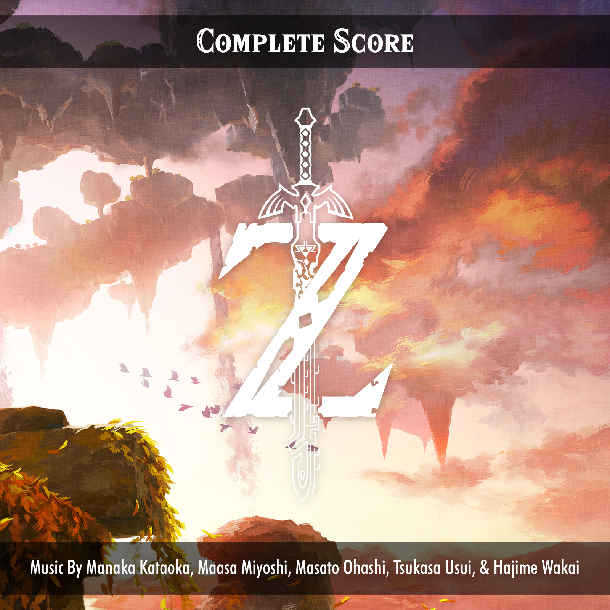
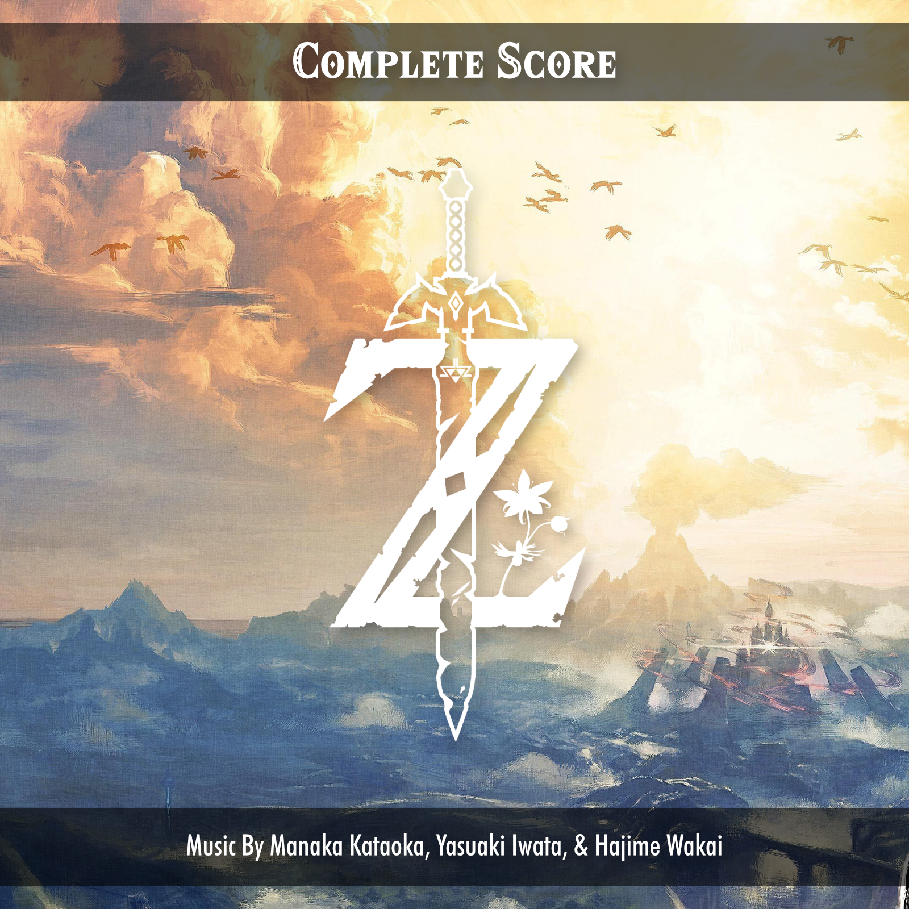

I have always really appreciated a good album cover for soundtrack or score. I appreciate an album cover that uses the promotional art for the movie in a new way, and when we get lucky we get art designed specifically for that cover. And when we get really lucky, we get alternate versions.
Yeah I know, you're probably like - “People really nerd out about album covers?” Yeah! A select few of us do. And as we move into an era with album art being less focussed on in streaming services like Spotify, it is starting to become less seen. Even so every once and a while for the last couple years I have tried my hand at making a couple alternate album covers of my own.
I recently finally made a couple alternate album covers for The Legend of Zelda: Tears of the Kingdom. And by alternate I really mean just actual album covers. Because while Nintendo released these scores officially they didn't really receive proper album covers, there is just the vertical box art that has been cropped. And while 99.99% of people would never care, I wanted to see what I could put together really quickly myself.
I started by finding promotional art for the game along with the fonts used in the game. I also loved the idea of just the Z logo, that has been somewhat themed for the last couple of games, standing alone. I did this for the album cover I did for Breath of the Wild and I wanted this cover to match. Once I found that I just started laying out the assets. Lastly I put the text on transparent black stripes inspired by how objective notifications appear in game. We then get these covers as a result.

I also went back and updated the design for the one I made for Breath of the Wild a couple years ago so that the designs compliment each other now. I then made a second cover for Breath of the Wild.

Nothing super crazy, but it's something I like to do for fun every once and a while when I look at an album cover (typically for a soundtrack I absolutely love) and think, “Yeah. I could make something better.”
If you liked these you can check out the rest of the album covers I have made on my DeviantArt page. Who knows, maybe I will post them all here on my site at some point.